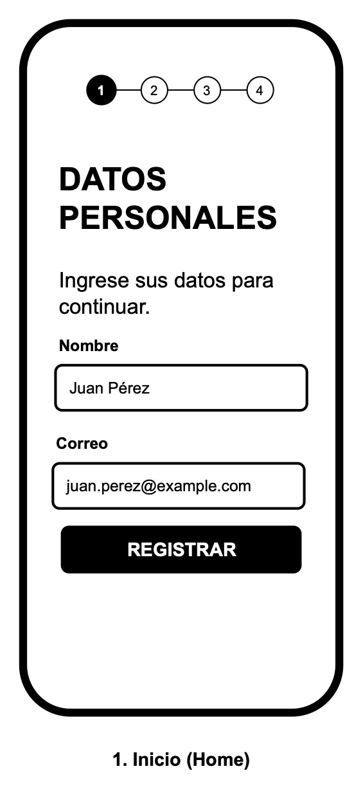
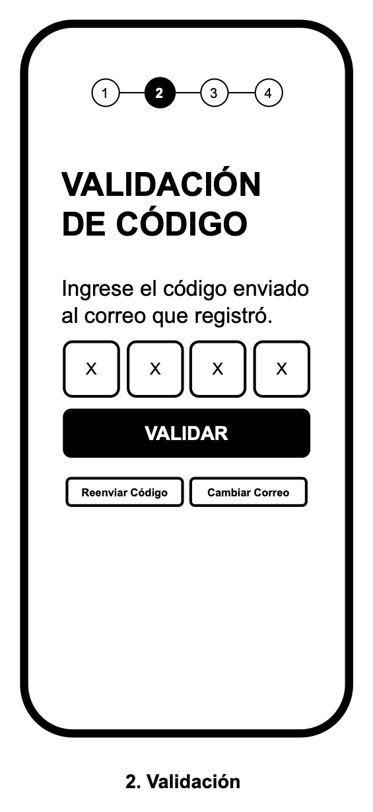
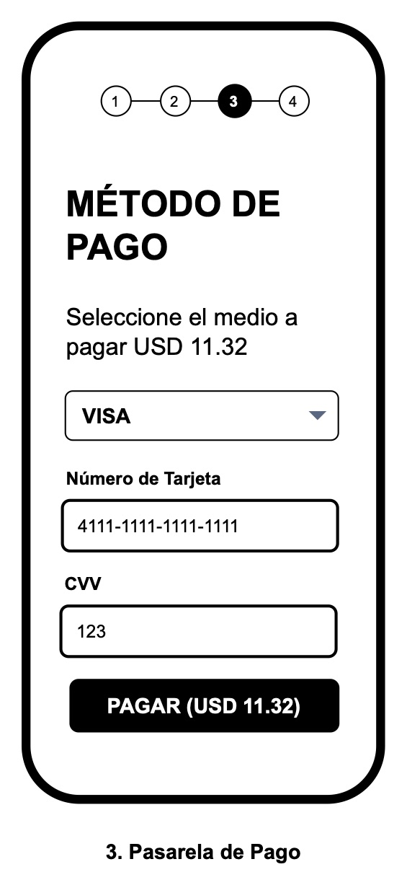
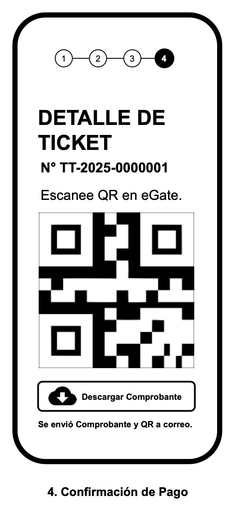
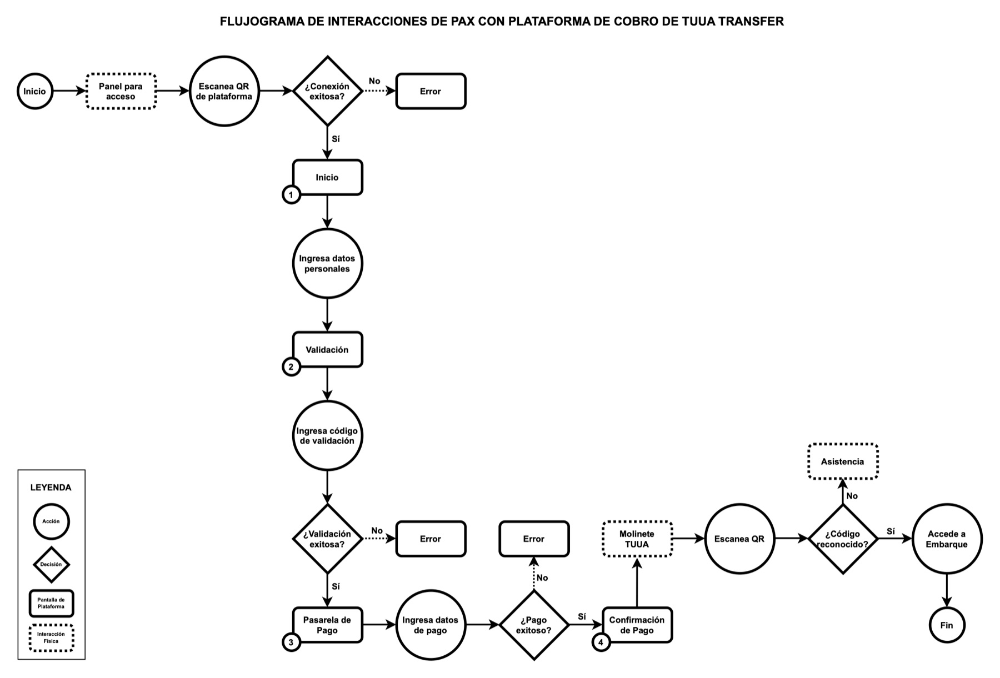

No precedent
Nobody had charged it before. There was no internal or external precedent to follow.
Lima's airport had never charged international transfer passengers a fee. I designed the web channel to collect it, one of four ways to pay, and handed it over.
A passenger lands in Lima and connects to another international flight. At the new terminal they owe a fee the airport had never charged, and no channel existed to collect it. Five areas each held a piece of the problem. As the internal consultant from Processes and Innovation, I coordinated the planning between them, designed the web payment flow, evaluated it and handed it to the team that built it. TUUA Transfer runs today, charging 130,000+ international transfer passengers a month.
Three terms and three facts before the story starts.
Jorge Chávez. Lima's international airport, run by the private operator Lima Airport Partners, where I worked.
International transfer passenger. A passenger who arrives in Lima on an international flight and connects to another international flight.
TUUA. Tarifa Unificada de Uso de Aeropuerto, the airport-use fee. TUUA Transfer is the one charged for the services these passengers use while they board.
Nobody had charged it before. There was no internal or external precedent to follow.
Today the fee is charged to 130,000+ international transfer passengers a month, on a platform a third party operates.
Three staffed payment points and one web platform. The web is the only digital channel, and the one whose flow I designed.
Why engineering was waiting on a definition.
The airport had to start charging international transfer passengers a fee it had never charged, and no channel existed to collect it.
Five areas each held a piece of it: Finance, Airport Operations, IT, Commercial and Reputation.
Engineering was waiting on a definition.
Where I sat between the areas that shaped the fee.
Finance, Airport Operations, IT, Commercial and Reputation each held a piece of the fee.
I was the internal consultant from Processes and Innovation. I coordinated the planning across the five areas, delivered the design work and advised in the decision meetings.
The client sat in another internal area, and the programme charter's stakeholder table does not list me as owner. That is the accurate record and this page keeps it.
The planning I coordinated held across all five areas through launch.
The scope my area delivered, in the closure mail's own list.
One for the platform and one for the payment gateway: the structural requirements handed to engineering.
The proposed payment screens, and a web prototype of the flow.
An operational casuistry estimating web-payment usage, and a process map: a blueprint for the physical payment points and a flowchart for the web one.
The closure mail listed all five on 4 August 2025: scope defined, deliverables handed over, work package closed.
The payment flow I designed, as I proposed it.





The web platform is one of four ways to pay the fee, and the only digital one. On the web, the passenger receives a QR code by email and shows it at the eGate. At the three staffed channels, the passenger receives a bar-code sticker on the boarding pass instead.
How the proposal was evaluated, and where it stopped.
Stakeholder review sessions for the digital platform, and field observation at the physical payment booths, evidenced by two pre-trial surveys and a set of qualitative notes. They are different methods answering different questions, and neither stands in for the other.
The same closure mail states that development would add one to two screens beyond the ones I proposed, with minor adjustments, gated on Billing's approval of the final version. The line between my deliverable and the vendor's is written into the programme's own documents, not only into my account of it.
Setting the fee was never my decision, and neither were the platform's build, deployment or operation. A third party operates it today.
A year later, I reviewed the live platform against my own proposal.
Public, unauthenticated pages only. No transaction was submitted, no session was captured, and no data was collected beyond what any visitor sees.
Personal data first: name and email, a validation code, then payment and the ticket.
The flight first: an eligibility self-declaration, flight details with the fee, then customer details before the payment control.
Reordered, not removed. Personal-data capture now follows the flight lookup, and I measured it doing exactly that on the customer-details screen. I read the reordering as intuitive and do not contest it.
Four screens are reachable before the payment control itself: the homepage, an eligibility self-declaration, a flight-details screen carrying the fee, and a customer-details screen. The pass stops there, deliberately, one control short of paying.
The fee is set at $11.86, shown a full screen earlier than I proposed and consistent between its two appearances: $23.72 for two passengers. Fee-setting was never my decision.
Eligibility is gated by a self-declaration click — "Soy ese tipo de pasajero" — rather than the automatic agreement check the technical scope specified. To my own knowledge of the build, that check was never implemented as written. This pass could not see past its own boundary to confirm it.
Six findings: one major, five minor, none critical. The major one is a screen headed "Ingresa tus datos personales y de tu vuelo" whose only fields are flight data.
I can read the gap between proposal and build in public, which is a better position than having to describe it.
Disclosure notes
TUUA Transfer. I understand the platform's mechanism and contributed to its UX/UI design — not its development, deployment or operation.